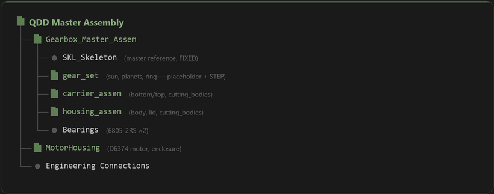
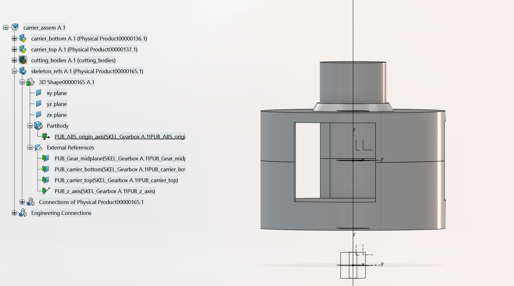

Motivation
Why
January 2026, hackathon day. I'd been studying mechanical engineering for three years but hadn't designed a complete electromechanical system — let alone touched CATIA or followed a V-model development process. I wanted to fix that gap by building the kind of actuator used in Tesla Optimus and modern legged robots: a quasi-direct-drive.
How
Structured engineering process from day one. Requirements defined before any CAD existed. Trade studies scored quantitatively. Interfaces locked before detail design started. Every decision traces back to a spec.
What
A 5:1 FDM 3D-printed planetary gearbox with a BLDC motor, magnetic encoder, and ODrive controller — designed for transparency (backdrivable, low friction, minimal backlash). The full project covers requirements, trade studies, CATIA assembly design, prototyping, and iterative testing.
Overview

A quasi-direct-drive (QDD) actuator built around a 5:1 FDM 3D-printed planetary gearbox, interfacing with a BLDC motor, magnetic encoder, and ODrive controller. The defining property of a QDD is transparency: the gearbox must be backdrivable with low friction and minimal backlash, so the motor can feel and respond to external forces.
QDD actuators are the standard in legged robots and collaborative arms (e.g., Tesla Optimus). I designed this one from scratch to build end-to-end actuator design experience, from requirements through testing.
Design Requirements
| ID | Requirement | Target | Type |
|---|---|---|---|
| R-01 | Backlash | ≤ 0.5° | Hard |
| R-02 | Cost | < $120 CAD | Hard |
| R-04 | Backdrivability | < 1 Nm friction | Hard |
| R-06 | Peak torque | ≥ 16 Nm | Hard |
| R-07 | Continuous torque | ≥ 12 Nm | Hard |
| R-09 | Efficiency | > 90% | Soft |
| R-10 | Weight | < 2 kg | Soft |
| R-11 | Speed | ≥ 600 RPM | Soft |
Project Status
Weighted Trade Studies
I followed a structured sprint: quantifiable requirements, concept research, weighted Pugh matrices, interface definition, then detailed CAD with DFM built in.
Gear Type Selection
6 gear concepts scored across 7 weighted criteria. Planetary won on cost, printability, and backdrivability.
| Metric (Weight) | Planetary | Cycloidal | Belt | Capstan | Strain Wave | Sequential |
|---|---|---|---|---|---|---|
| Cheapness (0.20) | 5 | 3 | 3.5 | 4 | 3.5 | 4.5 |
| Transparency (0.15) | 4 | 3.5 | 5 | 4 | 3 | 4 |
| Torque Density (0.10) | 4 | 4 | 3 | 3 | 5 | 2 |
| Precision (0.15) | 4 | 5 | 3.5 | 3 | 5 | 4 |
| DFM/DFA (0.15) | 4 | 3 | 4 | 3 | 3 | 4 |
| Efficiency (0.10) | 4.5 | 4 | 5 | 4.5 | 3.5 | 4 |
| Durability (0.15) | 5 | 4 | 4 | 4 | 3 | 5 |
| Weighted Total | 4.40 | 3.73 | 3.98 | 3.65 | 3.65 | 4.05 |
Ratio Selection
5:1 won at 4.83/5, the best compromise between transparency and torque multiplication. Scored across transparency (0.15), torque density (0.20), and durability (0.20).
Bearing Selection
Ball bearings won at 4.05/5. Cost weighted at 60% to reflect prototype budget constraint ($120). Crossed rollers scored higher on performance but cost 5x more.
Skeleton-Driven CATIA V6
The entire assembly is skeleton-driven: a master skeleton part contains all parameters, reference planes, and axes. Individual parts read from the skeleton via formulas and publications. They never reference each other directly. Changing a skeleton parameter propagates to every downstream part automatically.
I learned CATIA V6 (3DEXPERIENCE) from scratch for this project. Roughly 60-80 hours of self-directed learning and modeling.


Chain-of-zeros positioning: Skeleton at (0,0,0) → sub-assembly constrained to skeleton midplane → parts constrained to sub-assembly origin. Geometry pastes without offsets.
Cutting bodies for bearing pockets and bolt holes reference only skeleton datums, so they survive STEP swaps and revision changes.



FDM Tolerancing & Calibration
Standard ISO fit designations describe the intent, what the joint should behave like. FDM-specific offsets approximate those fits. Every bearing interface uses a separate named offset parameter in the skeleton, keeping nominal bearing dimensions pure.
| Interface | Offset Parameter | Value | Status |
|---|---|---|---|
| Housing bearing shaft | main_bearing_shaft_offset | +0.10 mm | Validated |
| Carrier bearing bore | carrier_bearing_bore_offset | +0.10 mm | Applied |
| Lid bearing bore | lid_bearing_bore_offset | +0.10 mm | Validated |
| Carrier output shaft | carrier_shaft_offset | +0.10 mm | Applied |
| Planet bearing bore | planet_bearing_offset | +0.15 mm | Pending |
| Ring-to-housing bore | ring_housing_diam_offset | +0.30 mm | Applied |
Calibration Coupon Method
Before the full build, I printed a test coupon with representative features. I measured each with calipers and compared to nominal, then fed the results directly back into CATIA skeleton offsets.
| Feature | Nominal | Measured | Deviation | Result |
|---|---|---|---|---|
| Main bearing bore | 37.10 mm | 37.10 mm | 0.00 | Perfect fit |
| Bearing shaft post | 25.10 mm | 25.01 mm | -0.09 | Correct |
| Planet bore | 14.00 mm | 13.75 mm | -0.25 | Offset increased |
| M3 clearance holes | 3.40 mm | ~3.00 mm | -0.40 | Offset extrapolated |
DFM Lessons
Heat-set inserts: Model pilot hole at insert OD, not generic tables (those assume injection molding). Plate-press technique for flush seating.
Self-tapping validated: M3: 2.6mm, M4: 3.6mm, M5: 4.6mm pilots. Simpler than heat inserts for prototyping.
Print orientation: Critical bores vertical for roundness. Gear teeth printed flat. Carrier orientation creates a conflict: output shaft up gives good top bearing surface but bad planet bearing shoulders.
Rev 00A Build
I printed the first complete prototype on a Bambu P1S in PLA with off-the-shelf ball bearings, then assembled and hand-tested everything to validate fits, find issues, and calibrate offsets for the next revision.

Fit Results
| Interface | Result | Action |
|---|---|---|
| Housing main bearing | Slightly too loose | Offset adjusted |
| Lid-to-bearing | Good transition fit | No change |
| Planet bearings | Inconsistent (1 of 3 loose) | Tolerance review |
| M3 motor holes | 0.13mm too tight | Bore enlarged |
| Sun gear bore | Very tight, needed pressing | 10.05 → 10.075mm |
Reprints: I reprinted the bottom carrier shell and housing body with adjusted offsets. Abandoned heat inserts in favor of self-tapping threads. Updated 4 skeleton offset parameters.
Issues identified: I flagged 5 concerns for structured testing: lid drag, gear mesh feel, carrier shoulder deformation, indexing play, and bolt torque sensitivity.
Structured Testing & Rev 00B
I set up testing so every unknown traces back to a requirement and a specific test. Each one is categorized by risk × uncertainty, and I define the question and acceptance criteria before running anything.
| Test | Question | Finding | Decision |
|---|---|---|---|
| T-001 | Why does the gearbox feel notchy? | Herringbone misalignment on at least one planet | Switch to spur gears |
| T-002 | Is the lid over-constraining the carrier? | Yes — double-constrains via ring gear + bearing recess | Decouple lid constraints |
| T-003 | Does the printed shoulder deform? | Top carrier shoulders have print quality issues | New print strategy |
| T-004 | Can carrier halves clock under load? | Play exists but no operational clocking force | No change needed |
| T-005 | Does tightening bolts bind planets? | Narrow window — 1.1 Nm causes drag | Shoulder redesign |
Rev 00B Scoped Changes
| Change | Source | Part |
|---|---|---|
| Switch herringbone → spur gears | T-001 | All gears |
| Enlarge output shaft + larger top bearing | T-001, U-07 | Carrier top |
| Fix planet bearing shoulder print quality | T-003, T-005 | Carrier top/bottom |
| Decouple lid constraint | T-002 | Lid |
| Thread into plastic (no heat inserts) | T-001 | Carrier |
GD&T & Engineering Drawings
In Progress
Formal tolerance callouts, datum schemes, and tolerance stack-up analysis. Coming after Rev 00B validation.
Controls & Motor Integration
Planned
ODrive S1 integration, impedance control, backdrivability measurement, and torque capacity verification.